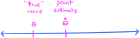
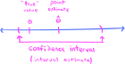

THIS CHAPTER IS UNDER CONSTRUCTION!!!
14. Statistical inference#
14.1. Statistics, estimators, and their distributions#
Our story of statistical inference begins by defining exactly what we mean by a statistic. The definition we give is very abstract in order to cover all the different cases in which statistics appear. However, as we go through the rest of the chapter, the statistics that we consider will mostly be familiar ones like means, variances, and standard deviations, as well as parameter estimators.
Definition 14.1
Let \(\bX\) be a \(m\)-dimensional random vector. A statistic is a random variable of the form
where \(r:\bbr^m \to \bbr\) is a real-valued function. An observed value \(t\) of \(T\) is called an observed statistic or empirical statistic.
If we conceptualize the components of a random vector \(\bX\) as a random sample \(X_1,X_2,\ldots,X_m\), then a statistic
is simply a function of the sample. Crucially important examples of statistics (and empirical statistics) include those defined as follows:
Definition 14.2
Let \(\bX = (X_1,\ldots,X_m)\) be an \(m\)-dimensional random vector. The sample mean is defined to be the statistic
while the sample variance is defined to be the statistic
The corresponding empirical statistics are the empirical mean and empirical variance defined as
As we mentioned above, very often the component random variables \(X_1,X_2,\ldots,X_m\) of the random vector \(\bX\) in the definition are assumed to form a random sample, i.e., an IID sequence of random variables. The dimension \(m\) is then referred to as the sample size. In principle, then, the sample size \(m\) can be any positive integer, and so it is often convenient to write \(\overline{X}_m\) for the sample mean, explicitly displaying the sample size. This gives us an entire infinite sequence of sample means, one for each sample size \(m\).
Since statistics are random vectors, they have their own probability distributions. These are given special names:
Definition 14.3
The probability distribution of a statistic \(T\) is called the sampling distribution of \(T\).
In general, computing the sampling distributions of statistics is difficult. But if we actually have observed data \(x_1,x_2,\ldots,x_m\), then (as you will explore in the programming assignment) there is a resampling method known as bootstrapping that yields approximations to sampling distributions. An example is given by the histogram (with KDE) on the right-hand side of the following figure, where a histogram (with KDE) of the empirical distribution of an observed dataset is given on the left-hand side:
Show code cell source
import numpy as np
import scipy as sp
import seaborn as sns
import pandas as pd
import matplotlib.pyplot as plt
import scipy.stats as ss
import matplotlib_inline.backend_inline
import matplotlib.colors as clr
import warnings
plt.style.use('../aux-files/custom_style_light.mplstyle')
matplotlib_inline.backend_inline.set_matplotlib_formats('svg')
warnings.filterwarnings("ignore")
blue = '#486AFB'
magenta = '#FD46FC'
np.random.seed(42)
X = ss.gamma(a=5)
sample_size = 100
resample_size = 1000
random_sample = X.rvs(size=sample_size)
replicate_means = []
num_resamples = 10000
for _ in range(num_resamples):
sample = np.random.choice(a=random_sample, size=resample_size, replace=True)
replicate_means.append(sample.mean())
_, axes = plt.subplots(ncols=2, figsize=(10, 3))
sns.histplot(x=random_sample, ec='black', stat='density', kde=True, ax=axes[0])
sns.histplot(x=replicate_means, ec='black', stat='density', kde=True, ax=axes[1])
axes[0].set_xlabel('$x$')
axes[0].set_ylabel('density')
axes[0].set_title('observed data')
axes[1].set_xlabel('$x$')
axes[1].set_ylabel('density')
axes[1].set_title('sampling distribution of the mean')
plt.tight_layout()
Observe that the sampling distribution on the right-hand side appears to be well approximated by a normal distribution. This is actually a manifestation of the Central Limit Theorem (see Theorem 14.5), which says that the sample means \(\overline{X}_m\) converge (in distribution) to a normal distribution as \(m\to \infty\), provided that the random variables are IID. This is true even when the observed data are not normally distributed.
Though our definition of a statistic (in Definition 14.1) is a completely arbitrary function of the data, very often statistics are constructed with a particular “target” in mind. For example, if we suppose that we have an IID random sample
drawn from a distribution with mean \(\mu\) and variance \(\sigma^2\), then the sample mean \(\overline{X}\) and variance \(S^2\) are cooked up as sample-based proxies for \(\mu\) and \(\sigma^2\). The sample mean and variance are not haphazardly constructed statistics with no clear purpose—rather, they are “aimed” at \(\mu\) and \(\sigma^2\). When statistics are constructed to serve as estimators for preexisting quantities of interest, they are (naturally) called estimators:
Definition 14.4
Let \(X_1,X_2,\ldots,X_m\sim P\) be an IID random sample drawn from some probability distribution \(P\), and let \(\theta\) be a quantity of interest, possibly (and very often) a parameter of the distribution \(P\). A statistic \(T = r(X_1,X_2,\ldots,X_m)\) that is intended to serve as an estimator of \(\theta\) is called an estimator and is often denoted by \(\hat{\theta}\) instead of \(T\).
The expected value of the estimator is the quantity
\[ \mu_{\hat{\theta}} \def E(\hat{\theta}). \]The bias of the estimator is the difference \(E(\hat{\theta}) - \theta\). The estimator is said to be unbiased if its bias is \(0\).
The variance of the estimator is the quantity
\[ \sigma^2_{\hat{\theta}} \def V(\hat{\theta}). \]The standard error of the estimator is the quantity
\[ \sigma_{\hat{\theta}} \def \sqrt{\sigma^2_{\hat{\theta}}}. \]
Observed values of estimators are called estimates and, confusingly, they are also often denoted \(\hat{\theta}\). So, the single notation \(\hat{\theta}\) very often stands for two things, the estimator itself, and its observed values.
As our first example, let’s compute the bias and standard error of the sample mean. Note that the sample mean may also be written as \(\hat{\mu}\), since it is intended as an estimator of \(\mu\).
Theorem 14.1 (Properties of the sample mean)
Let \(X_1,X_2,\ldots,X_m\) be an IID random sample from a distribution with mean \(\mu\) and standard deviation \(\sigma\).
The expectation of the sample mean \(\overline{X}\) is \(\mu\), and thus the sample mean is an unbiased estimator of \(\mu\).
The variance of the sample mean \(\overline{X}\) is \(\sigma^2/m\), and hence its standard error is \(\sigma_{\overline{X}} = \sigma/\sqrt{m}\).
If the \(X_i\)’s are normally distributed, then so too is the sample mean \(\overline{X}\).
Proof. Each random variable \(X_i\) has mean \(\mu\). By linearity of expectation, we have
This proves statement (1). For (2), we note that each \(X_i\) has variance \(\sigma^2\) and that they are independent. But independent random variables are uncorrelated, and so by Theorem 8.15 we get
Thus, the standard error is \(\sqrt{\sigma^2/m} = \sigma / \sqrt{m}\). This proves statement (2). Statement (3) follows from Theorem 8.24. Q.E.D.
14.2. Confidence intervals#
Suppose we have constructed an estimator
for some quantity of interest \(\theta\), as a function of an IID random sample \(X_1,X_2,\ldots,X_m \sim P\). If we feed in an observed dataset \(x_1,x_2,\ldots,x_m\) to the estimator, then we produce a single-number estimate, or point estimate, for theta:
{kind=link}
On the number line, we have marked a point estimate, as well as the “true” value of the quantity \(\theta\) to be estimated. Now, the point estimate may prove to be sufficient for our needs, but sometimes we would like an entire interval estimate for \(\theta\). Or, said differently, we would like an interval that yields estimates for \(\theta\) while also giving some sense of the variability in the estimate. These intervals are called confidence intervals:
{kind=link}
The end points of the interval will depend on three things:
A predetermined confidence level that, in some sense, tells us how likely it is that the interval contains the “true” value \(\theta\). As your intuition would suggest, higher confidence levels generally go with wider confidence intervals.
The distribution \(P\) from which the random sample \(X_1,X_2,\ldots,X_m\) is drawn.
The variability in the estimator \(\hat{\theta}\) itself, as measured by its standard error \(\sigma_{\hat{\theta}}\).
So, a confidence interval (centered at the point estimate \(\hat{\theta}\)) often looks like
where the (positive) numbers \(l\) and \(u\) depend on both the confidence level of the interval and the underlying data distribution. (In this form, notice that a smaller standard error yields a narrower interval.) The goal of this section is to describe several types of confidence intervals for different types of estimators and underlying distributions \(P\).
We begin in the simple case of a normally distributed random sample
with unknown mean \(\mu\) and known variance \(\sigma^2\). A natural estimator for \(\mu\) is the sample mean \(\overline{X}\) studied in the previous section. Thus, we aim to construct a confidence interval of the form
Of course, the empirical mean \(\bar{x}\) serves as an estimate for \(\mu\). But \(\bar{x}\) depends on the dataset, and thus \(\bar{x}\) carries variability—a different dataset would yield a different empirical mean \(\bar{x}\), and thus a different estimate for \(\mu\). To account for this variability, we may want to produce not only a single point estimate for \(\mu\), but rather an entire interval estimate, i.e., an interval of values that captures the “true” value of \(\mu\) with a certain level of confidence. To produce such an interval estimate, we consider the following statistic:
Theorem 14.2
Let \(X_1,X_2,\ldots,X_m\) be an IID random sample from a normal distribution with mean \(\mu\) and standard deviation \(\sigma\). Then the statistic
has a standard normal distribution. This statistic is called the standardized mean.
The standardized mean is obtained by first subtracting the expected value \(\mu = E(\overline{X})\) of the sample mean \(\overline{X}\) from itself, and then dividing by the standard error \(\sigma_{\overline{X}} = \sigma/\sqrt{m}\). The crucial property of the standardized mean is that its distribution does not depend on the unknown “true” value of \(\mu\). Such a statistic is sometimes called a pivotal quantity.
Now, suppose that we choose a number \(\alpha \in [0,1]\). Since \(Z\) is a standard normal variable, we have
where \(z_{\alpha/2}\) is the critical value defined so that
where \(\Phi\) is the cumulative distribution function of \(Z\). But the inequality
is easily seen to be equivalent to the inequality
and so we have
Interpreting this equality requires some care. First, we must understand that the mean \(\mu\), although it is unknown to us, is assumed fixed and does not vary. The variable quantity in the inequality (14.1) is the sample mean \(\overline{X}\), not the mean \(\mu\). So, when we interpret (14.2) as saying that the probability that \(\mu\) lies in the interval
is \(1-\alpha\), we must always remember that it is the interval that is random, not \(\mu\)!
Substitution of an observation of the sample mean \(\overline{X}\) into the interval (14.3) produces our first example of a confidence interval. Such an observation is nothing but an empirical mean \(\bar{x}\) obtained from a dataset.
Definition 14.5
Let \(X_1,X_2,\ldots,X_m\) be an IID random sample from a normal distribution with unknown mean \(\mu\) and known standard deviation \(\sigma\), and let \(\bar{x}\) be the empirical mean computed from an observed dataset. For \(\alpha\in [0,1]\), the interval
is called a \(100(1-\alpha)\%\) confidence interval for the mean \(\mu\).
Again, we must remember that the interval (14.4) is but one realization of the random interval (14.3). It is therefore not correct to say that the true value \(\mu\) lies in the interval (14.4) with probability \(1-\alpha\). Rather, a frequentist interpretation of probability would tell us that if we repeatedly sampled the true distribution \(\mathcal{N}(\mu,\sigma^2)\) over and over again many times, producing a large number of empirical means \(\bar{x}\) and therefore also a large number of confidence intervals (14.4), then approximately \(100(1-\alpha)\%\) of the confidence intervals would contain the true value \(\mu\).
In the rest of this section, we shall be interested in generalizing our initial construction of a confidence interval in two ways. First: We would like to have confidence intervals in the (more realistic) scenario when both the mean \(\mu\) and variance \(\sigma^2\) of the underlying normal distribution are unknown. This will lead us to confidence intervals involving critical values \(z_{\alpha/2}\) not drawn from a standard normal distribution, but rather from a new type of distribution called a \(t\)-distribution. Second: We would like to have confidence intervals for data drawn from any distribution, not only normal distributions. But in order to obtain these confidence intervals, we must assume that our observed datasets are large, enabling us to invoke the Central Limit Theorem. And, besides only working for “large” samples, in this case we must also settle for approximate confidence intervals.
We begin by considering the first generalization, when we have data drawn from a normal distribution \(\mathcal{N}(\mu,\sigma^2)\) with unknown mean and variance.
Definition 14.6
Let \(\nu\geq 1\) be an integer. A continuous random variable \(X\) is said to have a \(t\)-distribution with \(\nu\) degrees of freedom, denoted
if its probability density function is given by
with support \(\bbr\).
Theorem 14.3
Let \(X_1,X_2,\ldots,X_m\) be an IID random sample from a normal distribution with mean \(\mu\) and standard deviation \(\sigma\), and let \(\bar{x}\) and \(s\) be the empirical mean and standard deviation computed from an observed random sample. Then the statistic
has a \(t_{m-1}\) distribution. This statistic is called the studentized mean.
Theorem 14.4
Let \(X_1,X_2,\ldots,X_m\) be an IID random sample from a normal distribution with unknown mean \(\mu\) and unknown standard deviation \(\sigma\), and let \(\bar{x}\) and \(s\) be the empirical mean and standard deviation computed from an observed random sample. For \(\alpha \in [0,1]\), the interval
is a \(100(1-\alpha)\%\) confidence interval for the mean \(\mu\).
Theorem 14.5 (Central Limit Theorem)
Let \(X_1,X_2,\ldots,X_m\) be an IID random sample from a distribution with mean \(\mu\) and standard deviation \(\sigma\). Then, in the limit as \(m\to \infty\), we have
where \(Z \sim \mathcal{N}(0,1)\).
Theorem 14.6
Let \(X_1,X_2,\ldots,X_m\) be an IID random sample from a distribution with unknown mean \(\mu\) and known standard deviation \(\sigma\), and let \(\bar{x}\) be the empirical mean computed from an observed random sample. For \(\alpha\in [0,1]\) and \(m\) sufficiently large, the random interval
is approximately a \(100(1-\alpha)\%\) confidence interval for the mean \(\mu\).
14.3. Hypothesis tests#
14.4. Statistical inference in linear regression#
We begin our discussion in this section by considering an observed dataset
As always, the \(y\)’s are conceptualized as observed values of a random variable \(Y\). The goal of a linear regression model is to “explain” the variability of the \(y\)’s through a linear relationship to (the observed values of) another random variable \(X\), the explanatory variable or the predictor variable. In this case, \(Y\) is called the response variable.
So, we suppose that our \(y\)’s form part of an observed bivariate dataset
A measure of variability of the \(y\)’s is the empirical variance
In our analysis, however, it is convenient to measure the variability via the quantity
called the total sum of squares. The fundamental insight in this section is that the total sum of squares may be decomposed as a sum of two other sums of squares, one which accounts for the variance “explained” via a linear regression model, and the other that accounts for the residual or “unexplained” variance.
To obtain these other sums of squares, we suppose that our (simple) linear regression model has parameters \(\beta_0\), \(\beta_1\), and \(\sigma^2\). We saw in Corollary 13.1 that the maximum likelihood estimates
for the “true” bias and slope terms \(\beta_0\) and \(\beta_1\) are
We also defined the predicted values and residuals by the equations
These definitions of \(\hat{y}_i\) and \(r_i\) suited our brief analysis in Chapter 12. However, in order to obtain their values, we would need to know the “true” values of \(\beta_0\) and \(\beta_1\), which we presumably don’t know! So, our discussion in this section begins with alternate definitions of these quantities based on the MLEs for the bias and slope terms:
Definition 14.7
We define the \(i\)-th predicted value and \(i\)-th residual to be
for each \(i=1,2,\ldots,m\).
With these new definitions of predicted and residual values in hand, we now define the two other sums of squares mentioned above:
Definition 14.8
We define
called the error sum of squares and regression sum of squares.
Using these new sums of squares, we state and prove that the total sum of squares may be decomposed as the error and regression sums of squares. This is called the “ANOVA” identity, which is short for analysis of variance.
Theorem 14.7 (ANOVA identity for linear regression)
There is an equality \(SST = SSE + SSR\).
Proof. We begin by noting that
So, all we need to do is show that \(\sum_{i=1}^m (y_i - \hat{y}_i)(\hat{y}_i - \bar{y}) =0\). To do this, we note that
and so
But then
where we used the equality
in moving from the second to the third line. Q.E.D.
The error sum of squares
is easily conceptualized as the amount of error accumulated in using the predicted values \(\hat{y}_i\) from the linear regression model as proxies for the true values \(y_i\). In this sense, the error sum of squares quantifies the variance in the \(y\)’s that is left “unexplained” by the linear regression model. Since the total sum of squares is the total variance in the \(y\)’s, the ANOVA identity shows that the regression sum of squares
should quantify the variance in the \(y\)’s that is “explained” by the model. These considerations motivate the definition of the following quantity, which is the proportion of total variance of the \(y\)’s that is “explained” by the model:
Definition 14.9
The coefficient of determination, denoted \(R^2\), is given by
Note that \(R^2\) always lies between \(0\) and \(1\), by the ANOVA identity. Values closer to \(1\) indicate that a large portion of the total variance in the \(y\)’s is “explained” by the linear regression model, which means that the regression line should fit the data well. In the other direction, values of \(R^2\) close to \(0\) should mean that the regression line is a poor fit for the data.
However, as we learned in Section 8.5, the correlation coefficient \(\rho\) is a measure of the strength of the linear relationship between two random variables \(X\) and \(Y\). Moreover, given an observed bivariate dataset
we learned in a previous programming assignment that the quantity
serves as an empirical estimate of \(\rho\). The empirical correlation \(r\) must lie between \(-1\) and \(1\), with negative values indicating a linear relationship between the \(x\)’s and \(y\)’s with negative slope. Thus, the square \(r^2\) must lie between \(0\) and \(1\), and it measures the strength of any type of linear relationship, whether positive or negative slope. In fact, we have:
Theorem 14.8
There is an equality \(r^2 = R^2\).
Before beginning the proof, it will be convenient to introduce some notation. We set:
Then, we have
With this notation set, we prove the theorem:
Proof. First, recall from the proof of Theorem 14.7 that \(\hat{y}_i - \bar{y} = \hat{\beta}_1(x_i - \bar{x})\). Thus:
But then
as desired. Q.E.D.
We now turn toward inference problems in linear regression centered on the slope coefficient
If we conceptualize the \(y\)’s as observed values of an IID random sample
then we obtain the slope estimator, also denoted \(\hat{\beta}_1\), by putting
Likewise, the bias estimator, or intercept estimator, is given by
Our goal over the rest of this section is to compute confidence intervals for the slope coefficient \(\beta_1\).
We begin with an estimator of the “true” standard deviation \(\sigma\) in our linear regression model:
Definition 14.10
For a dataset of size \(m\), we define the residual standard error to be the quantity
Replacing the \(y_i\)’s with \(Y_i\)’s yields the esimator
The denominator \(m-2\) appears (rather than \(m-1\)) in order to make the square \(S^2_e\) an unbiased estimator of the “true” variance \(\sigma^2\) of the linear regression model.
Theorem 14.9
The slope estimator \(\hat{\beta}_1\) is an unbiased estimator of \(\beta_1\), i.e.,
\[ E(\hat{\beta}_1) = \beta_1. \]Letting \(\sigma\) be the “true” standard deviation of the linear regression model, the standard error of \(\hat{\beta}_1\) is
\[ \sigma_{\hat{\beta}_1} = \frac{\sigma}{\sqrt{s_{xx}}}. \]Replacing \(\sigma\) with its estimate via the residual standard error \(s_e\), an estimate of the standard error of \(\hat{\beta}_1\) is
\[ \hat{\sigma}_{\hat{\beta}_1} = \frac{s_e}{\sqrt{s_{xx}}}. \]
14.5. Analysis of variance#
Definition 14.11
Let \(n\geq 1\) be an integer and let \(\btheta^\intercal =(\theta_1,\ldots,\theta_n)\) be a vector such that \(0\leq \theta_j \leq 1\) for each \(j=1,\ldots,n\) and \(\sum_{j=1}^n \theta_j = 1\). A discrete random variable \(X\) is said to have a categorical distribution with parameter \(\btheta\), denoted
if its probability mass function is given by
if \(x\in \{1,2,\ldots,n\}\), and \(p(x;\btheta)=0\) otherwise.
Definition 14.12
An analysis of variance model, or ANOVA model, is a probabilistic graphical model whose underlying graph is of the form

The model has the following parameters:
A parameter vector \(\btheta \in \bbr^n\) such that \(X \sim \Cat(\btheta)\).
A parameter vector \(\bmu \in \bbr^n\).
A positive real parameter \(\sigma^2>0\).
The link function at \(Y\) is given by
and \(\bmu^\intercal = (\mu_1,\mu_2,\ldots,\mu_{n})\).